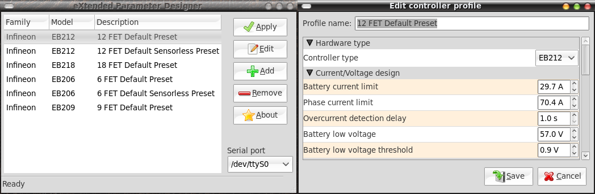

| Download | Development Homepage | Report a bug |
XPD is a cross-platform, open-source rewrite of a tool named Parameter Designer (sometimes also named Keywin e-Bike Lab). The original program was written in Visual Basic, and only the windows executable file was distributed, thus, it is not possible to enhance or port it to other platforms.
I started this project after I discovered how easy was to understand the serial protocol used between the Parameter Designer and the e-bike controller. Besides, I had a dream to be able to change e-bike settings anytime, anywhere. This would be possible if it would be possible to change controller settings using some portable device with serial port capabilities, for example my Nokia N900 phone.
The obligatory screenshot:
I wrote a more or less full description of the e-bike controller protocol using Google docs. Here is a link to the (always) latest version
You may notice several differences between the way how XPD presents the controller parameters, and the way how Parameter Designer used to do it. I'll list here the most important differences, with detailed explanations.
The basic usage of the program should be quite obvious for anybody who can handle a computer mouse. The main program window displays a list of existing controller profiles, you may create, edit, delete and apply profiles. In the bottom-right corner of the window you may select the serial port to which you connected the controller programming cable.
The controller looks for profiles in two directories: first, this is the program data directory (/usr/share/xpd/ on Linux, share/ on Windows), and second, in the user's home data directory (~/.local/share/xpd/ on Linux, "C:\Documents and Settings\Username\My Documents\xpd" on Windows).
XPD is licensed under the terms of GNU General Public License version 3 or later.
So far this is a solo project, so the only contributor for now is:
Also I would like to thank the BerliOS project for hosting all my small public projects.